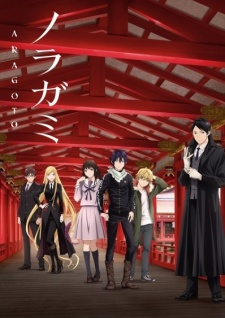
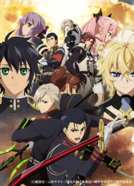
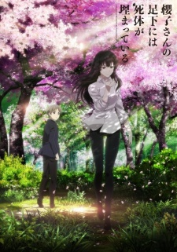
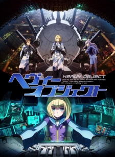
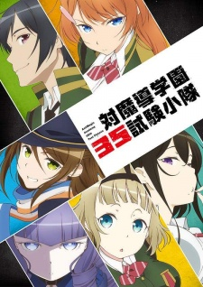

Attack on Titan 2nd SeasonRelease Date: 2016 |
Summary:
Many years ago, the last remnants of humanity were forced to retreat behind the towering walls of a fortified city to escape the massive, man-eating Titans that roamed the land outside their fortress.
Only the heroic members of the Scouting Legion dared to stray beyond the safety of the walls – but even those brave warriors seldom returned alive.
Those within the city clung to the illusion of a peaceful existence until the day that dream was shattered, and their slim chance at survival was reduced to one horrifying choice: kill – or be devoured.
Info: The continnuation of the popular Attack on Titan (Shingeki no Kyojin), it was announced to be released in the year of 2016. With unknown number of episodes each about 24 minutes or longer. The age rating stays the same at R-17+ for violence and profanity. The opening and ending themes have not yet been announced yet. |
|
Noragami AragotoRelease Date: October 3, 2015 |
 |
Summary:Hiyori Iki was a regular middle school student until she was hit by a bus while trying to save the life of a track suit-wearing person named Yato.
This incident causes her to transform into a half-phantom.
Soon after she learns that Yato is a god and she ends up being dragged into the world of Gods while having to attempt staying in the realm of the living.
Info: The second season of Noragami it is planned to have 12 episodes. The duration of each episode is not specified yet. There is no age rating on this particular anime. The opening has been announced as "Kyouran Hey Kids!!" by THE ORAL CIGARETTES while the ending theme has been disclosed as "Nirvana" by Tia. |
Owari no Seraph: Nagoya Kessen-henRelease Date: October 10, 2015 |
 |
Summary:In 2012, the world alledgedly comes to an end when a "human-made virus" attacks the world leaving only children under the age of thirteen alive.
This is when the vampires took over the children's lives making a deal that said in exchange for protection to the outside world the vampires would drink their blood anytime.
Info: The second season to Owari no Seraph (Seraph of the End) which is planned to have 12 episodes. The duration of each episode is not specified yet. There is no age rating on this particuar anime. The last airing date is announced to be December 26, 2015. The opening theme is announced as "Two Souls -Toward the Truth-" by fripSide, while the ending theme is to be "Orarion" by Nagi Yanagi. |
Sakurako-san no Ashimoto ni wa Shitai ga UmatteiruRelease Date: October 8, 2015 |
 |
Summary:
Sakurako-san no Ashimoto ni wa Shitai ga Umatteiru otherwise known as, A Corpse is Buried Under Sakurako's Feet, is a new and very anticipated anime around the world.
Shoutarou Tatewaki, a high schooler living in Asahikawa City, Hokkaido, meets Sakurako Kujou, a bone-loving ojou-san who has an ability to analyze specimen. Because of meeting her, he has to accompany her to various cases.
Info: The duration of each episode is not yet specified. There is no age rating on this particular anime. The opening and ending themes have not yet been announced. |
Heavy ObjectRelease Date:October 3, 2015 |
 |
Summary:
Quenser came to the Alaskan military base to study Objects,
the new weapons that have completely revolutionized war as we know it—battles are fought by soldiers controlling Objects far away from harm;
however, when he starts to get close to Object pilot Milinda, will he discover the grim truth behind Heavy Objects?
Info: The duration of each episode is not yet specified. There is no age rating on this particular anime. The opening theme has been announced to be "One More Chance!!" by ALL OFF while the ending theme is "Dear Brave" by Kano. |
Taimadou Gakuen 35 Shiken ShoutaiRelease Date:October 8, 2015 |
 |
Summary:The 35th Test Platoon of Antimagic academy, they're one of squads enrolled at academy specializing in raising the witch hunters, whose job is to find, neutralize any magical threats!
Unfortunately they're a group of failures nicknamed "Small Fry Platoon," a platoon formed from bunch of self-centered people who can't cooperate and have personality problems.
Will they manage to overcome their weaknesses and shine as the strongest platoon?
Info: The duration of each episode is not yet specified. There is no age rating on this particular anime. The opening theme has been released to be "Embrace Blade" by Afilia Saga and the ending theme to be "Calling my Twilight" by Kanako Itou. |
Newly Released |
Ones I'm Anticipating |